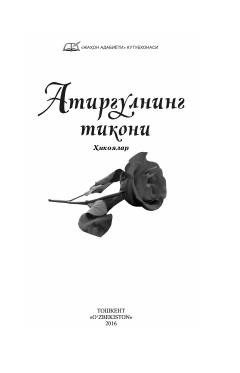

ATJahon adabiyotining saralangan durdona hikoyalari jamlangan adabiy to'plam.
Ushbu kitob jahon adabiyotining turli xil durdona hikoyalarini o'z ichiga olgan antologiyadir. To'plam Sobirjon Yoqubov tomonidan saralab, o'zbek tiliga tarjima qilingan va adabiy-badiiy qimmatga ega asarlardan tashkil topgan.